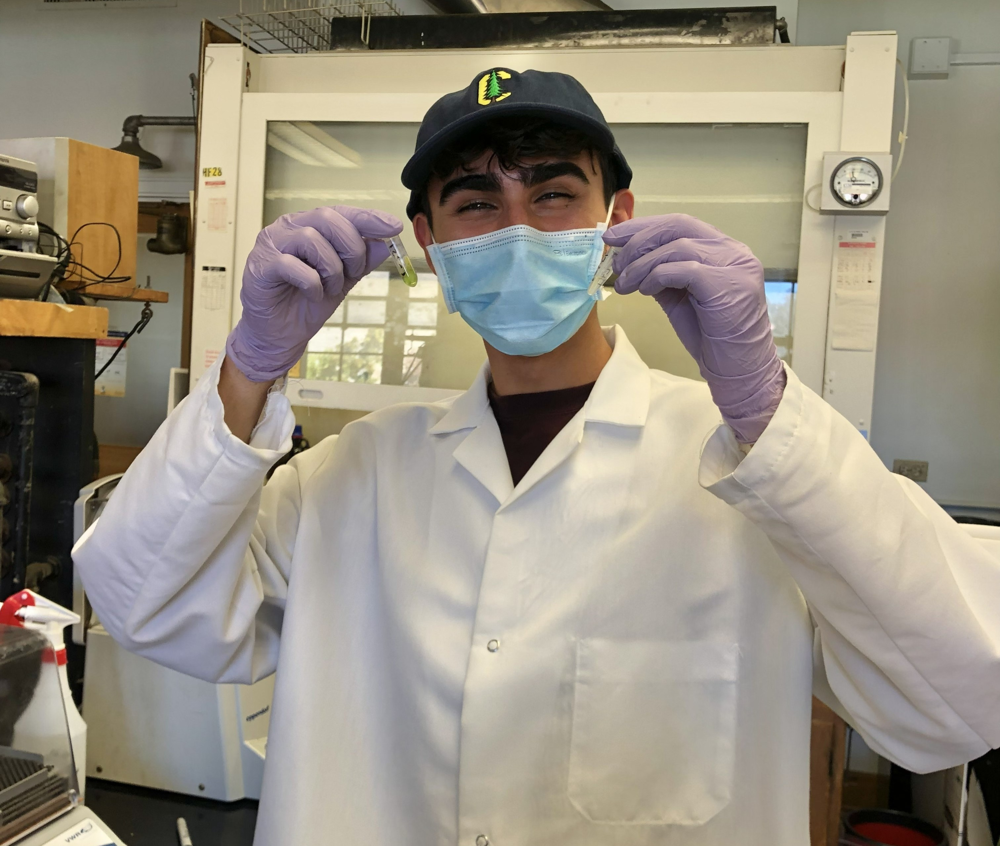

University of California, Los Angeles
Master of Applied Geospatial Information Systems and Technologies
Galleher Geospatial
I am a geospatial analyst and environmental practitioner focused on using contemporary technology for contemporary challenges in land stewardship.
Education
Master of Applied Geospatial Information Systems and Technologies
B.S. in Ecosystem Management and Forestry
Biography
In the 21st century, foresters are coding… can ya believe it?
I am a geospatial analyst and environmental practitioner focused on using contemporary technology for contemporary challenges in land stewardship. With a background in ecosystem management and forestry from UC Berkeley and ongoing graduate work in geospatial information systems at UCLA, my work centers on upholding the principles of traditional ecological knowledge to understand how landscapes function, and how we can better steward them in an era of rapid change and increasing ecological pressures.
As Assistant Program Director / County Coordinator for Plumas Corp (Plumas County Fire Safe Council), I designed and led programs that provided wildfire risk assessments, defensible space planning, and technical support to landowners across Plumas County. This work combined field evaluations with geospatial modeling to inform mitigation strategies at both the parcel and community scale. Another core component of my work was the development and execution of grant-funded wildfire mitigation programs. I have written and managed grant applications focused on hazardous fuels reduction, community protection, and strengthening communication networks across California’s Fire Safe Councils. Through this work, I have secured and helped implement over $7 million in funding to support communities living with fire.
In my undergraduate studies, I contributed to ecological research in both forest and aquatic systems, including field and laboratory work on coast redwood genetics and stream health. These experiences continue to inspire my current work, ensuring I approach every map and model with the same sense of awe I approached every tree in the field!
Currently, my graduate studies include applied geospatial work for various organizations. You can view some research, geospatial modeling, maps, and spatial databases for the Tahoe Regional Planning Agency in my geospatial portfolio.
Experience
Led defensible space assessments and wildfire risk evaluations for private landowners and communities across Northern California. Designed and implemented mitigation strategies that integrate field observations with spatial modeling, helping translate wildfire science into practical, property-level action.
Built GIS-based tools and workflows to assess wildfire hazard, prioritize fuels reduction, and support landscape-scale decision-making. Experienced in ArcGIS Pro, Python, and remote sensing workflows, with applications in wildfire modeling, transportation equity, and environmental planning.
Managed and supported multi-million dollar wildfire resilience programs, contributing to the development and execution of over $7 million in funded projects. Worked across agencies and stakeholders to align technical analysis with program goals, reporting requirements, and on-the-ground outcomes.
Conducted ecological fieldwork and laboratory research in forest and aquatic systems, including coast redwood genetics and stream health assessment. Developed sampling strategies using GIS, led field crews, and contributed to published scientific research.
Publications
G3 Genes|Genomes|Genetics, Volume 15, Issue 5
Contributed to field and laboratory research on coast redwood genetics across the species’ range, embarking on multi-day foliage sampling trips from Monterey to southern Oregon. Contributed to ArcGIS Pro sampling schemes using seed zones, fog belts, land ownership, and existing genetic diversity data; conducted stand evaluations and tree selection in the field; and extracted high molecular weight DNA from redwood foliage using the CTAB protocol. Listed in acknowledgements.
Ecology, Volume 104, Issue 2
Contributor through field and lab efforts connected to stream ecology and macroinvertebrate-based evaluation of stream health. Listed in acknowledgements.

Resume
For a complete overview of my experience, view my full resume.
View ResumeTree Tech
Click to learn more about the tools that make Tree Tech.